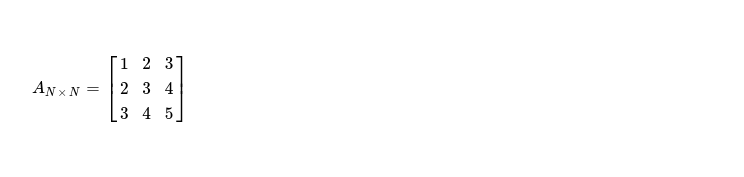
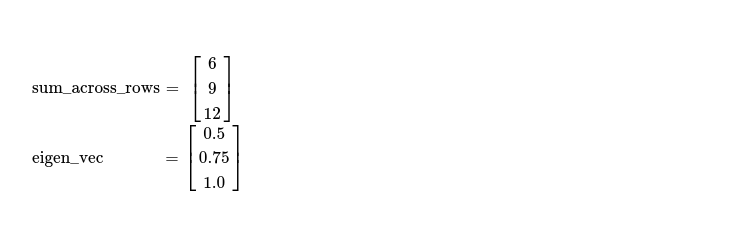
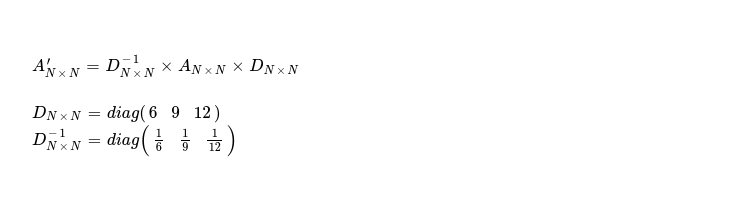
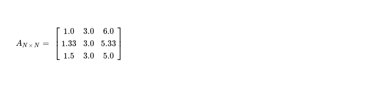
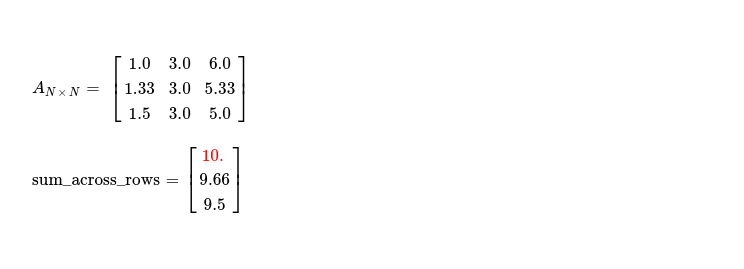
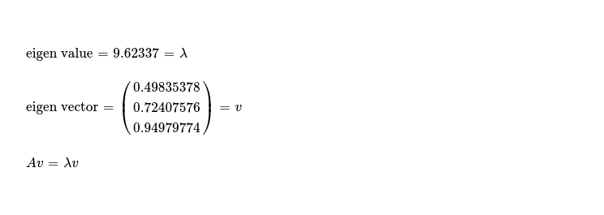
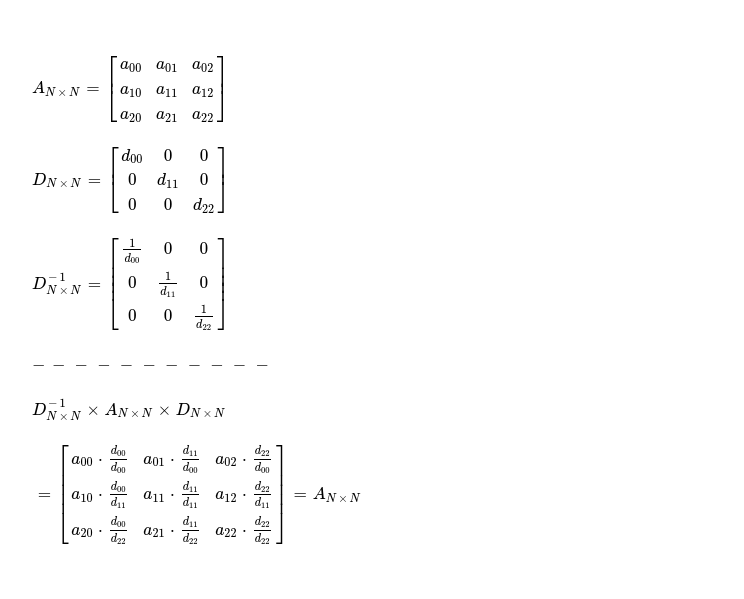

Last week I started working on implementing Similarity Transform Method, which is an iterative method for quickly finding maximum eigen value along with respective eigen vector for a positive square matrix. Today I plan to go through this method step-by-step, while first developing its sequential implementation and finally moving to parallel implementation, written targeting heterogeneous platforms i.e. CPU, GPU, FPGA etc. using SYCL DPC++. Finally I'd like to do some performance comparison between sequential and parallel implementations, both written by me.
As Similarity Transform works with positive square matrices, I'd like to fix one matrix, which I'll work on. Let me call it AN x N, where N = 3.
I start with finding sum of elements across each row of AN x N. I can write 👇 code snippet for computing that.
Notice, I mark maximum row sum as we've to use it for computing eigen vector ( iteratively ) in next step. I initialise iteratively computed eigen vector with [1; N] and during each iteration following function is used for updating eigen vector, while reaching closer to desired values.
Now I'd like to present next step where I check whether we've converged to maximum eigen value or not. It's as simple
as checking whether all consecutive absolute differences between cells of sum_across_rows vector are below of preset
epsilon value, which I consider to be error induced during floating point arithmetics. If all consecutive differences are below
say, EPS = 1e-5, it denotes it's good time to stop this iterative method, as we've converged to maximum eigen value
of given matrix. I can take very first element of sum_across_rows vector ( in final round ) and consider it to be
maximum eigen value, we're looking for.
I write convergence criteria checker function as below. In very first iteration, we're far from convergence, as our row sum vector looks like
[6, 9, 12] --- so answer is negative and we'll continue to next iteration.
Before I prepare AN x N for next iteration, this is how current eigen vector looks like.
In final step, I take sum_across_rows vector and prepare diagonal matrix DN x N and DN x N-1, using those I compute A'N x N for next iteration. I programmatically express that logic 👇.
With completion of this step, I've following matrix, which is to be worked on during next iteration.
In second iteration, I already find sum_across_rows vector having lesser consecutive absolute differences --- tending to converge.
After going through each of these steps, during 5th iteration, convergence criteria is fully satisfied, resulting into following eigen value and corresponding eigen vector.
Just to check that these are correct, I assert following, while considering some floating point arithmetics error will probably be present.
I keep full sequential implementation of Similarity Transform Method here for future reference. Now it's good time to talk about parallel implementation of this method. First step i.e. summing N-many elements across N-many rows is easily parallelizable. I'm currently making use of atomic instructions for spawning N x N work-items, each reading value from cell Ai, i and atomically summing up values along each row. In second step, I find maximum value from just computed N-element vector i.e. sum_across_rows. Here also I make use of atomic instructions for parallelly computing maximum element of vector. Third step consists of updating eigen vector with sum_across_rows of this iteration, which is also a good candidate of parallel computing. Each of N-many work-items updating a single cell of eigen vector. Finally, it requires me to perform two matrix multiplications in last step, but given that two of these three operands are diagonal matrices and one is inverse of another, I can compute matrix for next round using 👇 trick. This trick lends itself to heavy parallelism and each cell of A N x N matrix can be computed independently using N x N work-items.
I've also parallel implementation for checking whether current round has reached convergence criteria or not, using atomic instructions. Empowered with these, I'm ready to run both sequential and data parallel implementation for performance comparison. Starting with sequential implementation I wrote in Python. This is a single threaded implementation using numpy for doing matrix algebra. Note performance when N = 1024 ( read last row ).
Data parallel implementation powered by Unified Shared Memory and atomics doesn't perform very well, compared to previous one. Note, for both data parallel and sequential implementations, I'm using randomly generated positive square matrices with each cell taking value from [0, 1).
I'd like to note few points, regarding why data parallel implementation doesn't do better than sequential one.
Keeping aforementioned points in mind, I end today's discussion. I keep full implementation of both sequential and parallel similarity transform methods
in this repository. In coming days, I'll try to
improve data parallel implementation, while also sharing my findings.
Have a great time !